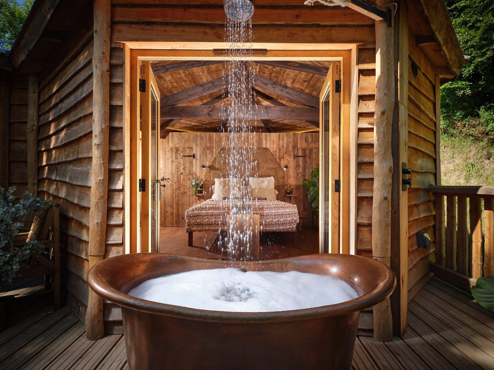
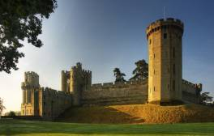

Inspire me
Planning a weekend break or a much-needed romantic trip away and in need of fresh ideas and holiday inspiration for 2024? We've got just the thing. From England's best gardens to Harry Potter filming locations, 24-hour city breaks ideas and some of the most charming villages and countryside in the world, we have plenty of recommendations to help you escape the everyday.
Award-winning places to visit across England

Discover our award-winning restaurants, pubs, hotels, glamping sites and attractions from around the
country...
Six great places to watch live sports in England
When the Premier League is well underway, it's a great excuse to head down to the pub and cheer on
your favourite team.
From London to Newcastle: 16 days out near you

Pack up a picnic, hop in the car and swap the city for some of these beautiful English sights - all
an hour or less from a major city.
5 beaches you wouldn't believe are in England
It's hard to believe, but these five beaches really are in England. Check them out, and you
might find your next holiday destination.
10 places to visit in Dorset this summer
Take a Dorset adventure this summer for top-notch seafood, squirrel spotting, cool hotels and
Instagrammable villages.
A muggle's guide to Harry Potter filming locations
From Hogwarts to Diagon Alley, relive the Harry Potter legacy by discovering the locations of
one of the series’ most iconic scenes.
10 ridiculously romantic things to do in England
With heaps of places to explore hand-in-hand, love is in the air all year round in England, not just
on Valentine’s Day.
Bonfire Night events and light shows in 2023
Remember, remember the 5th of November with five of the best annual fireworks displays across the
country.
16 secret English country gardens to visit
England is world-famous for its grand manicured gardens but there are plenty of leafy hidden gems
that are worth a visit too.